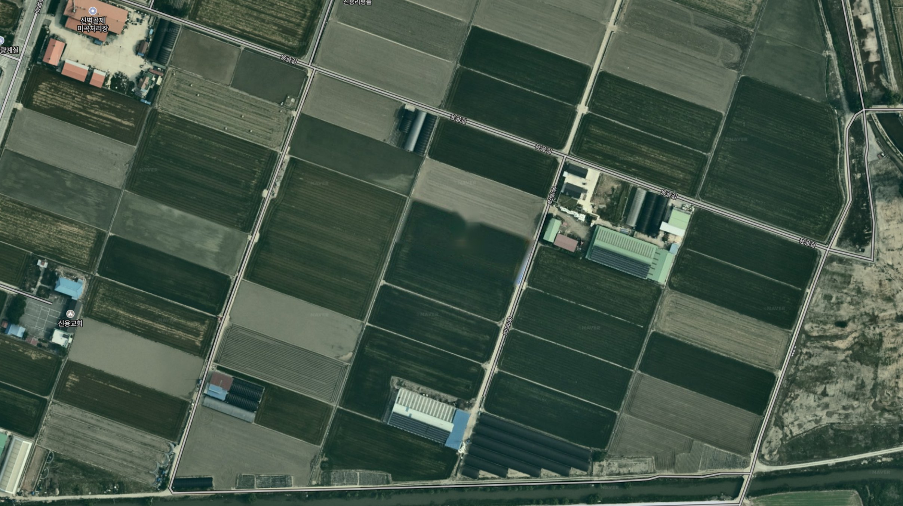

<!doctype html>
<html lang="ko">
<head>
<meta charset="utf-8">
<meta name="viewport" content="width=1440">
<title>필지 데이터 관리 · 데이터 등록 · 드론 파종 컨셉 UI</title>
<link rel="stylesheet" href="../lib/tokens.css">
<link rel="stylesheet" href="../lib/bundle.css">
<style>body{margin:0;background:#FFFFFF} a{text-decoration:none}</style>
<script src="../lib/morphdom.js"></script>
<script src="../lib/runtime.js"></script>
<script src="../lib/components.js"></script>
</head>
<body>
<div id="dc-root"></div>
<script type="text/x-dc-template" id="dc-tpl">
<helmet>
<style>
body{margin:0}
a{color:#FFFFFF;text-decoration:none}a:hover{color:#FFD2C8}
</style>
</helmet>
<div style="height: 1000px; display: flex; background: #FFFFFF; font-family: var(--font-primary); color: #222222; font-variant-numeric: tabular-nums; overflow: hidden;">

  <div style="flex: 0 0 230px; display: flex;">
    <dc-import name="Nav" active="landdata" hint-size="230px,1000px"></dc-import>
  </div>

  <div style="flex: 1 1 auto; min-width: 0; display: flex; flex-direction: column;">
    <header style="height: 50px; flex-shrink: 0; display: flex; align-items: center; gap: 16px; padding: 0 20px; background: #231F20; color: #FFFFFF;">
      <span style="font-size: 13px; font-weight: 600;">2027년 4월 12일</span>
      <div style="flex-grow: 1;"></div>
      <span style="font-size: 13px; font-weight: 600;">안녕하세요, 관리자 님</span>
    </header>
    <div role="tablist" aria-label="열린 화면" style="height: 34px; flex-shrink: 0; display: flex; align-items: flex-end; gap: 2px; padding: 0 10px; background: #EEEEEE;">
      <a href="LandDataList.html" role="tab" aria-selected="false" style="height: 30px; padding: 0 22px; display: flex; align-items: center; background: #E2E2E2; color: #555555; font-size: 12px; font-weight: 600;">필지 데이터 관리</a>
      <a href="#" role="tab" aria-selected="true" style="height: 30px; padding: 0 22px; display: flex; align-items: center; gap: 10px; background: #FFFFFF; color: #222222; font-size: 12px; font-weight: 600;">데이터 등록 <span aria-hidden="true" style="color: #666666;">×</span></a>
    </div>

    <section aria-label="데이터 등록 지도" style="flex: 1 1 auto; position: relative; overflow: hidden; background: #1A1A1A;">
      <div style="position: absolute; left: 40%; top: 50%; width: 2415px; height: 1354px; margin-left: -1243px; margin-top: -643px; transform: scale(1.35); transform-origin: 1243px 643px;">
        
        <svg role="img" aria-label="GJ-S1 필지 경계와 업로드한 처방 구간 미리보기" viewBox="-795 -285 2415 1354" style="position: absolute; inset: 0; width: 100%; height: 100%;">
          <defs><clipPath id="fLD"><path d="M308 245 L630 357 L589 472 L267 360 Z"></path></clipPath></defs>
          <path d="M308 245 L630 357 L589 472 L267 360 Z" fill="rgba(255,255,255,0.12)"></path>
          <sc-if value="{{isSeed}}" hint-placeholder-val="{{true}}">
            <g>
              <g clip-path="url(#fLD)" opacity="0.8">
                <rect x="200" y="200" width="500" height="320" fill="#5FBF86"></rect>
                <path d="M308 245 L420.7 284.2 L398.2 347.4 L285.5 308.3 Z" fill="#CDEBD7"></path>
                <path d="M549.5 329 L630 357 L617.7 391.5 L537.2 363.5 Z" fill="#CDEBD7"></path>
                <path d="M458.6 358.3 L611.6 408.8 L589 472 L444.1 421.6 Z" fill="#107C41"></path>
                <path d="M279.3 325.5 L375.9 359.1 L363.6 393.6 L267 360 Z" fill="#107C41"></path>
              </g>
              <path d="M420.7 284.2 L398.2 347.4 L285.5 308.3 M549.5 329 L537.2 363.5 L617.7 391.5 M458.6 358.3 L611.6 408.8 M458.6 358.3 L444.1 421.6 M279.3 325.5 L375.9 359.1 L363.6 393.6" fill="none" stroke="#FFFFFF" stroke-width="1.2" stroke-dasharray="4 3" opacity="0.8"></path>
              <rect x="327" y="288" width="52" height="17" rx="8.5" fill="rgba(14,28,49,0.85)"></rect>
              <text x="353" y="300" font-size="10" font-weight="700" fill="#FFFFFF" text-anchor="middle">Z-01 · 저</text>
              <rect x="463" y="332" width="52" height="17" rx="8.5" fill="rgba(14,28,49,0.85)"></rect>
              <text x="489" y="344" font-size="10" font-weight="700" fill="#FFFFFF" text-anchor="middle">Z-02 · 중</text>
              <rect x="557" y="353" width="52" height="17" rx="8.5" fill="#E76F00"></rect>
              <text x="583" y="365" font-size="10" font-weight="700" fill="#FFFFFF" text-anchor="middle">Z-03 · 저</text>
              <rect x="502" y="407" width="52" height="17" rx="8.5" fill="rgba(14,28,49,0.85)"></rect>
              <text x="528" y="419" font-size="10" font-weight="700" fill="#FFFFFF" text-anchor="middle">Z-04 · 고</text>
              <rect x="295" y="352" width="52" height="17" rx="8.5" fill="rgba(14,28,49,0.85)"></rect>
              <text x="321" y="364" font-size="10" font-weight="700" fill="#FFFFFF" text-anchor="middle">Z-05 · 고</text>
            </g>
          </sc-if>
          <path d="M308 245 L630 357 L589 472 L267 360 Z" fill="none" stroke="#FFFFFF" stroke-width="2.5"></path>
        </svg>
      </div>

      <div style="position: absolute; left: 28px; top: 18px; width: 520px; height: 38px; display: flex; align-items: center; gap: 10px; padding: 0 14px; box-sizing: border-box; background: rgba(19,19,19,0.88); color: #FFFFFF; font-size: 13px; font-weight: 600;">
        <span style="flex-grow: 1;">전북특별자치도 김제시 부량면 신용리 439 (신OO) GJ-S1</span>
        <svg width="20" height="20" viewBox="0 0 24 24" fill="none" stroke="#FFFFFF" stroke-width="2" stroke-linecap="round" aria-hidden="true"><circle cx="11" cy="11" r="7"></circle><path d="M20 20l-4-4"></path></svg>
      </div>

      <sc-if value="{{isSeed}}" hint-placeholder-val="{{true}}">
        <div style="position: absolute; left: 28px; bottom: 28px; padding: 10px 12px; background: rgba(19,19,19,0.88); color: #FFFFFF; font-size: 12px; display: flex; flex-direction: column; gap: 6px;">
          <span style="font-weight: 700;">업로드 미리보기 · 처방 파종량 (kg/10a)</span>
          <div style="display: flex; gap: 12px;"><span style="display: flex; align-items: center; gap: 6px;"><span style="width: 12px; height: 12px; background: #CDEBD7;"></span>저 3.0</span><span style="display: flex; align-items: center; gap: 6px;"><span style="width: 12px; height: 12px; background: #5FBF86;"></span>중 3.5</span><span style="display: flex; align-items: center; gap: 6px;"><span style="width: 12px; height: 12px; background: #107C41;"></span>고 4.0</span></div>
        </div>
      </sc-if>

      <form aria-label="데이터 등록" style="position: absolute; right: 14px; top: 18px; width: 410px; max-height: calc(100% - 36px); overflow-y: auto; box-sizing: border-box; padding: 18px 22px; background: rgba(32,32,32,0.95); border: 1px solid #3A3A3A; border-radius: 4px; color: #FFFFFF; display: flex; flex-direction: column; gap: 14px;">
        <div style="font-size: 15px; font-weight: 700;">데이터 등록</div>
        <fieldset style="margin: 0; padding: 0 0 14px; border: 0; border-bottom: 1px solid #3A3A3A; display: flex; flex-wrap: wrap; gap: 8px 14px; font-size: 12px;">
          <legend style="position: absolute; width: 1px; height: 1px; overflow: hidden; clip: rect(0 0 0 0);">데이터 분류</legend>
          <sc-for list="{{types}}" as="ty" hint-placeholder-count="6">
            <label style="display: inline-flex; align-items: center; gap: 5px; cursor: pointer; color: {{ty.color}};">
              <input type="radio" name="dtype" checked="{{ty.checked}}" onChange="{{ty.pick}}" style="accent-color: #EF4122; margin: 0;">{{ty.label}}<sc-if value="{{ty.isNew}}" hint-placeholder-val="{{false}}"><span style="font-size: 10px; font-weight: 700; color: #FFFFFF; background: #025996; padding: 1px 6px; border-radius: 999px;">신규</span></sc-if>
            </label>
          </sc-for>
        </fieldset>

        <sc-if value="{{isSeed}}" hint-placeholder-val="{{true}}">
          <div style="display: flex; flex-direction: column; gap: 12px; font-size: 12px;">
            <div style="display: grid; grid-template-columns: 84px 1fr; align-items: center; gap: 10px 8px;">
              <span style="font-weight: 600;">처방 기관</span><span style="height: 26px; display: flex; align-items: center; padding: 0 8px; background: #FFFFFF; color: #222222;">경상국립대학교 (AI 처방)</span>
              <span style="font-weight: 600;">작물</span><span style="display: flex; align-items: center; gap: 6px;"><span style="height: 26px; width: 120px; display: flex; align-items: center; padding: 0 8px; background: #FFFFFF; color: #222222;">IRG</span><span style="font-size: 10px; font-weight: 700; color: #FFFFFF; background: #025996; padding: 1px 6px; border-radius: 999px;">작물 추가</span></span>
              <span style="font-weight: 600;">처방 버전</span><span>v4 <span style="color: #A2A2A2;">(자동 부여 · 이전 v3 승인됨)</span></span>
              <span style="font-weight: 600;">처방 파일</span><span style="display: flex; align-items: center; gap: 6px; padding-bottom: 6px; border-bottom: 1px solid #575757;"><span style="flex-grow: 1; color: #DDDDDD;">GJ-S1_seed_rx_v4.zip</span><button type="button" style="height: 22px; padding: 0 10px; border: 0; background: #5A5A5A; color: #FFFFFF; font: 600 11px var(--font-primary);">파일 선택</button></span>
              <span style="font-weight: 600;">좌표계</span><span>EPSG:5186 <span style="color: #A2A2A2;">(.prj 자동 인식)</span></span>
            </div>
            <div style="display: flex; flex-direction: column; gap: 6px;">
              <span style="font-weight: 600;">속성 매핑</span>
              <div style="display: grid; grid-template-columns: 1fr 20px 1fr; gap: 6px; align-items: center; color: #DDDDDD;">
                <span style="padding: 4px 8px; background: #3A3A3A;">zone_id</span><span aria-hidden="true">→</span><span>구간 ID</span>
                <span style="padding: 4px 8px; background: #3A3A3A;">level</span><span aria-hidden="true">→</span><span>등급 (저·중·고)</span>
                <span style="padding: 4px 8px; background: #3A3A3A;">rate_kg10a</span><span aria-hidden="true">→</span><span>파종량 (kg/10a)</span>
              </div>
            </div>
            <div style="display: flex; flex-direction: column; gap: 6px; padding: 10px 12px; background: #2A2A2A; border-radius: 4px;">
              <span style="font-weight: 700;">파일 검증</span>
              <span style="color: #7EE2AD;">✓ 필지 경계 일치 98.6%</span>
              <span style="color: #7EE2AD;">✓ 구간 5개 · 3단계 · 총 파종량 14.2 kg</span>
              <span style="color: #FFAB43;">! Z-03 면적 80평 · 최소 구간 기준(100평) 미만</span>
            </div>
          </div>
        </sc-if>

        <sc-if value="{{isDrone}}" hint-placeholder-val="{{false}}">
          <div style="display: flex; flex-direction: column; gap: 10px; font-size: 12px;">
            <div style="display: grid; grid-template-columns: 70px 1fr; align-items: center; gap: 10px 8px;">
              <span style="font-weight: 600;">데이터소스</span><span style="display: flex; gap: 12px;"><span>○ 정밀 위성</span><span style="color: #FF8A73;">● 드론</span></span>
              <span style="font-weight: 600;">작물</span><span style="height: 26px; width: 120px; display: flex; align-items: center; padding: 0 8px; background: #FFFFFF; color: #222222;">IRG</span>
              <span style="font-weight: 600;">진단일</span><span style="height: 26px; width: 120px; display: flex; align-items: center; padding: 0 8px; background: #FFFFFF; color: #222222;">2027-04-05</span>
            </div>
            <sc-for list="{{layers}}" as="ly" hint-placeholder-count="9">
              <div style="display: flex; align-items: center; gap: 8px; padding-bottom: 6px; border-bottom: 1px solid #484848;">
                <span style="width: 92px; font-weight: 600; display: flex; align-items: center; gap: 4px;">{{ly.name}}<sc-if value="{{ly.isNew}}" hint-placeholder-val="{{false}}"><span style="font-size: 10px; font-weight: 700; color: #FFFFFF; background: #025996; padding: 0 5px; border-radius: 999px;">신규</span></sc-if></span>
                <span style="flex-grow: 1; color: #BBBBBB; font-size: 11px;">{{ly.file}}</span>
                <button type="button" style="height: 22px; padding: 0 10px; border: 0; background: #5A5A5A; color: #FFFFFF; font: 600 11px var(--font-primary);">파일 선택</button>
              </div>
            </sc-for>
            <div style="display: flex; flex-direction: column; gap: 6px; padding: 10px 12px; background: #2A2A2A; border-radius: 4px;">
              <span style="font-weight: 700; display: flex; align-items: center; gap: 6px;">촬영 메타데이터 <span style="font-size: 10px; font-weight: 700; color: #FFFFFF; background: #025996; padding: 1px 6px; border-radius: 999px;">신규</span></span>
              <span style="color: #DDDDDD;">센서 · KETI 다중센서 (멀티스펙트럴 + LiDAR)</span>
              <span style="color: #DDDDDD;">촬영 시각 · 2027-04-05 10:20</span>
              <span style="color: #DDDDDD;">좌표계 · EPSG:5186 · GeoTIFF</span>
            </div>
          </div>
        </sc-if>

        <div style="display: flex; gap: 10px; padding-top: 4px;">
          <button type="button" style="flex: 1; height: 34px; border: 0; border-radius: 4px; background: #5A5A5A; color: #FFFFFF; font: 700 12px var(--font-primary);">초기화</button>
          <button type="button" style="flex: 1; height: 34px; border: 0; border-radius: 4px; background: #EF4122; color: #FFFFFF; font: 700 12px var(--font-primary);">등록하기</button>
        </div>
        <sc-if value="{{isSeed}}" hint-placeholder-val="{{true}}">
          <a href="Field.html" style="font-size: 12px; color: #FF8A73; text-align: right;">등록 후 필지 모니터링 › 드론 파종에서 처방 검토 ›</a>
        </sc-if>
      </form>
      <div style="position: absolute; left: 10px; bottom: 6px; font-size: 10px; font-weight: 600; color: #FFFFFF;">© NAVER Corp. · 국토지리정보원</div>
    </section>
  </div>
</div>
</script>
<script type="text/x-dc-logic" id="dc-src">
var DTYPES = [
  { id: 'growth', label: '생육 진단' },
  { id: 'growthRx', label: '생육 처방' },
  { id: 'yield', label: '수확량 예측' },
  { id: 'soil', label: '토양' },
  { id: 'soilPrecise', label: '토양 정밀진단' },
  { id: 'seed', label: '파종 처방', isNew: true }
];
var LAYERS = [
  { name: 'NDVI', file: 'GJ-S1_NDVI_20270405.tif' },
  { name: 'GNDVI', file: 'GJ-S1_GNDVI_20270405.tif' },
  { name: 'NDRE', file: '' },
  { name: 'OSAVI', file: '' },
  { name: 'LCI', file: '' },
  { name: '항공', file: 'GJ-S1_RGB_20270405.tif' },
  { name: '열화상', file: '' },
  { name: 'DEM', file: 'GJ-S1_DEM_20270405.tif', isNew: true },
  { name: '토양수분', file: 'GJ-S1_SM_20270405.tif', isNew: true }
];
class Component extends DCLogic {
  renderVals() {
    var self = this;
    var s = this.state || {};
    var cur = s.dtype || 'seed';
    return {
      isSeed: cur === 'seed',
      isDrone: cur === 'growth',
      types: DTYPES.map(function (t) {
        return {
          label: t.label, isNew: !!t.isNew, checked: t.id === cur,
          color: t.id === cur ? '#FFFFFF' : '#CCCCCC',
          pick: function () { self.setState({ dtype: t.id }); }
        };
      }),
      layers: LAYERS.map(function (l) { return { name: l.name, isNew: !!l.isNew, file: l.file || '선택된 파일 없음' }; })
    };
  }
}
</script>
</body>
</html>
